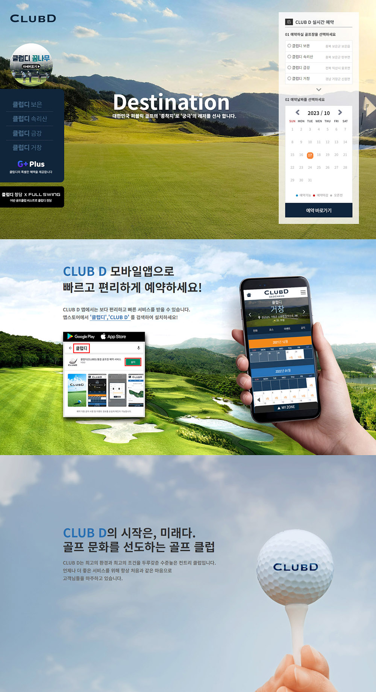
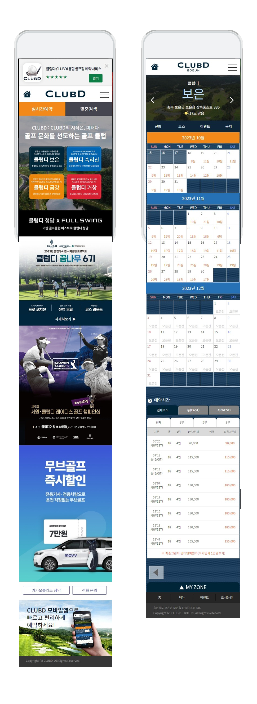
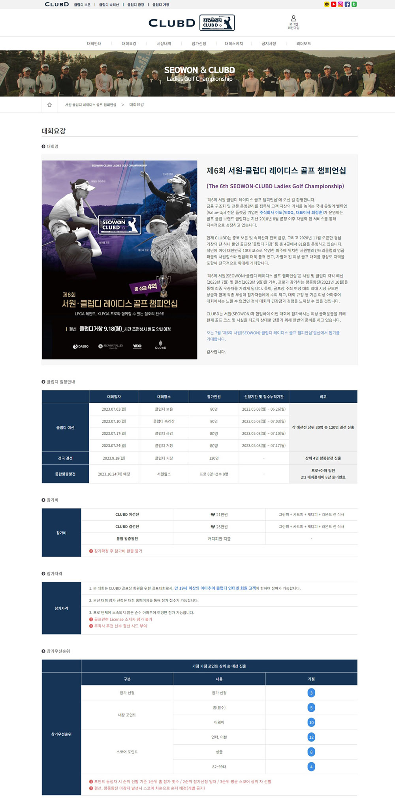
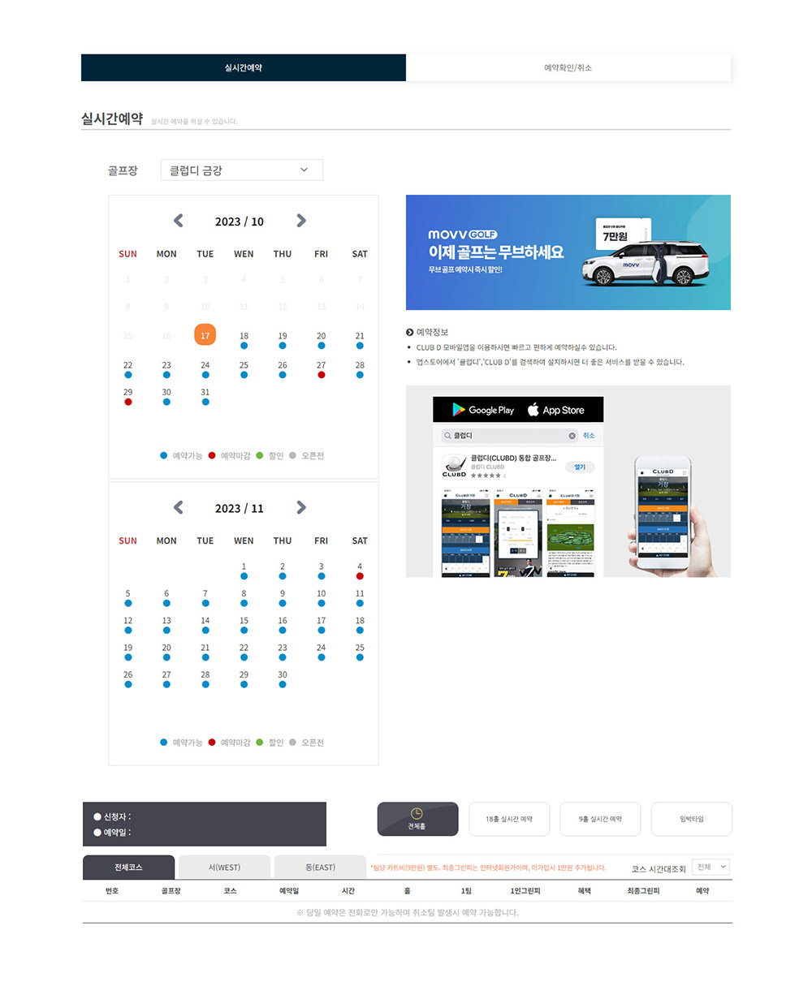

골프장 브랜드 · 예약 웹사이트
클럽디 골프
YIDO 레저사업본부의 브랜드 '클럽디(CLUBD)' 런칭부터 서비스 구축의 시작을 함께 했습니다.
클럽디 레저사업의 첫 시작인 골프장 예약 웹사이트를 구축하고,
브랜드가 빠르게 성장하는 5년의 과정을 함께했습니다.

골프장 브랜드 · 예약 웹사이트
YIDO 레저사업본부의 브랜드 '클럽디(CLUBD)' 런칭부터 서비스 구축의 시작을 함께 했습니다.
클럽디 레저사업의 첫 시작인 골프장 예약 웹사이트를 구축하고,
브랜드가 빠르게 성장하는 5년의 과정을 함께했습니다.
YIDO 사내 레저사업본부 개설과 함께 '클럽디(CLUBD)' 브랜드를 초기 구축했습니다. 골프장 운영사업을 시작으로, 꿈나무·스크린골프·코스관리·워터파크까지 클럽디 브랜드가 빠르게 확장되는 4~5년의 성장 과정을 함께 경험했습니다.

인터넷 예약의 전체 플로우를 IA 단계부터 설계했습니다. 날짜·시간·잔여 타임 선택 과정에서 발생하는 이탈과 실수를 줄이기 위해 단계별 분기 구조를 단순화했고, 골프 ERP 개발사 이츠원과 협업해 실제 시스템과 연동되는 UI를 구현했습니다.


PC웹사이트는 골프장의 전경과 예약, 코스정보를 정확하게 알려주는게 중요했습니다. 코스별 드론 영상과 거리 정보를 제공하여 정확한 코스 정보 전달에 집중했습니다. 예약 UI는 날짜 선택 → 잔여 타임 확인 → 예약 확정의 직관적 흐름으로 설계했습니다.






클럽디 브랜드를 운영하면서 대회·이벤트 등 대외 활동에 대응하는 온·오프라인 홍보 디자인 작업을 함께 진행했습니다. 사내 홍보팀과 협업하였고, 초기 브랜드 인지도 확립과 더불어, 예약 편의성과 운영 효율성이 강화되었습니다.